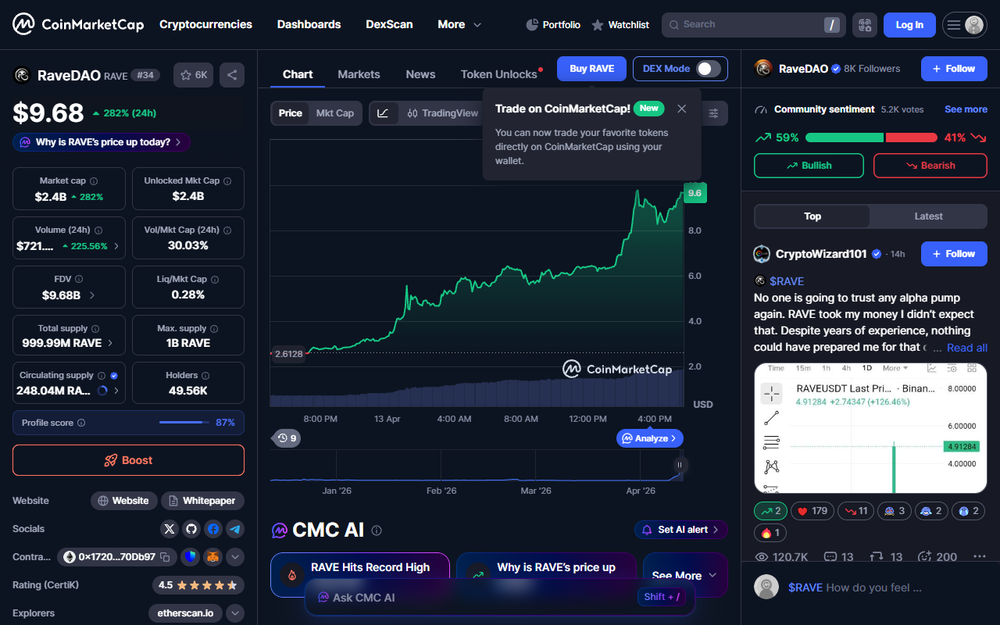
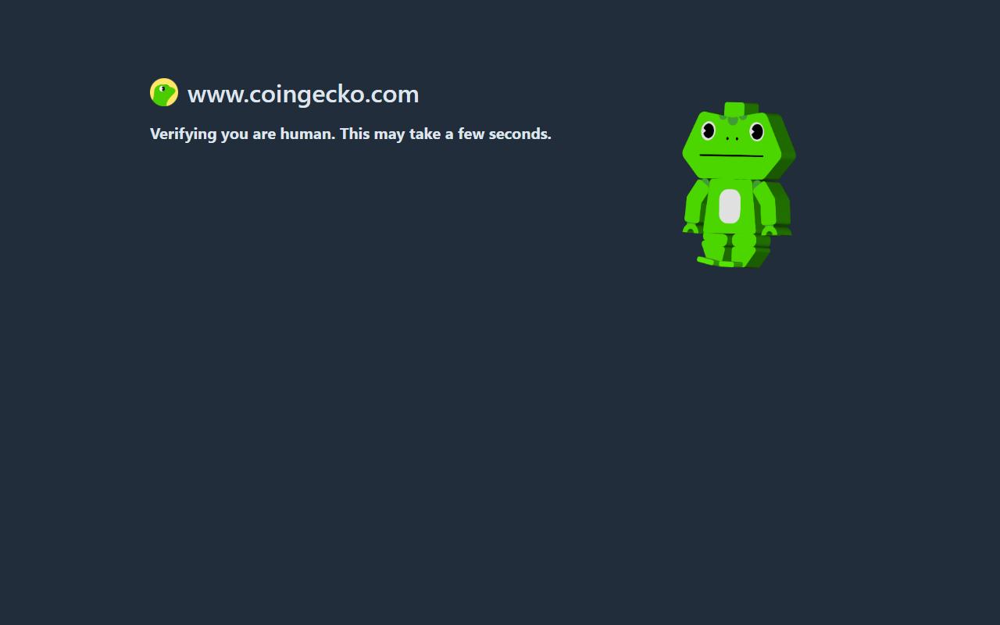
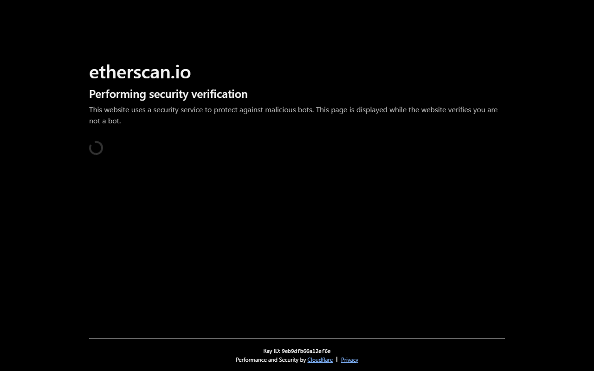
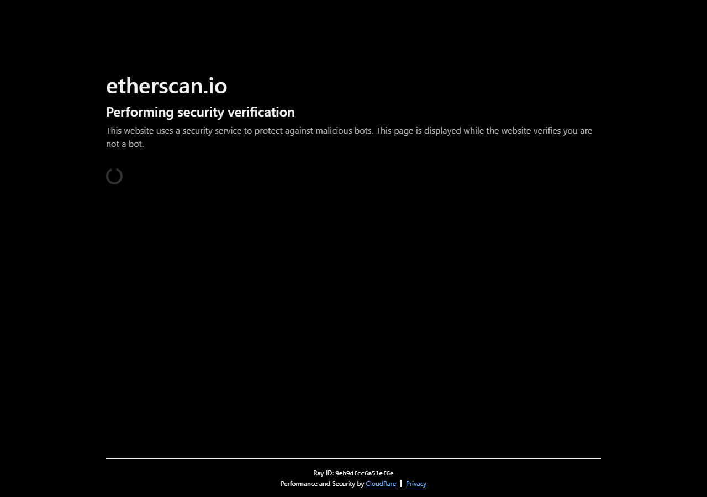
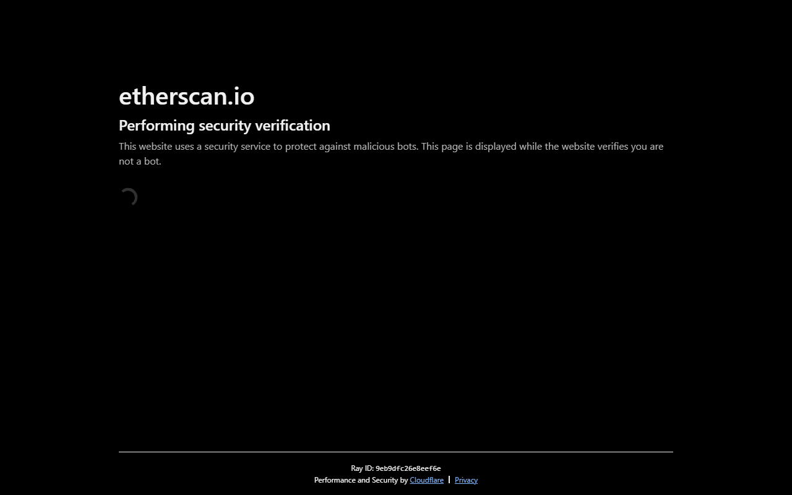

Exclusive analysis reveals a $40 million whale wallet actively distributing tokens, a circulating supply figure that contradicts public data, and a derivatives market structure driving the rally.
RaveDAO (RAVE), an Ethereum-based entertainment protocol token, has staged one of the most dramatic rallies in the cryptocurrency market this year, surging more than 2,393% in seven days to reach an all-time high above $9.68 before retreating. The move has propelled the token into the top 35 cryptocurrencies by market capitalization, according to data from CoinMarketCap.
But beneath the extraordinary price action lies a more complex story. An analysis of on-chain data, verified through the Etherscan API, reveals a token supply that sharply contradicts publicly reported figures, a whale wallet actively distributing tokens, and a derivatives market structure that suggests the rally may be more mechanical than fundamental.

Between April 6 and April 13, RAVE climbed from approximately $0.30 to a peak of $9.68, a gain of more than 2,393%. The token's market capitalization, based on CoinMarketCap's reported circulating supply of 248.04 million tokens, stands at approximately $2.4 billion.
Trading volume has been extraordinary. Over the past 24 hours, RAVE has seen $721.7 million in trading volume, a figure that exceeds its reported market cap — a rare occurrence that signals intense speculative activity.

The rally has not been linear. According to data from WorldCoinIndex, the token jumped 1,000% in the week ending April 12, then added another 40% on April 12 alone, before surging an additional 282% in the 24 hours to April 13.
However, the publicly reported supply figures appear to be misleading — and the implications are significant for anyone assessing the token's valuation.
Here's where things get interesting.
CoinMarketCap and CoinGecko both report that RAVE has a circulating supply of 248.04 million tokens out of a maximum supply of 1 billion — suggesting that only 24.8% of tokens are in circulation. This "low float" narrative has been cited by multiple analysts as a key driver of the rally, with the implication that limited supply is driving scarcity and upward price pressure.
The on-chain data tells a different story.
Querying the Etherscan API directly for the token's total supply at contract 0x17205fab260a7a6383a81452cE6315A39370Db97 returns a figure of 977,578,097 RAVE — or 97.76% of the maximum supply.
If the on-chain supply figure is accurate, the implications are significant:
| Metric | As Reported by CMC | On-Chain (Etherscan) |
|---|---|---|
| Circulating Supply | 248.04M (24.8%) | 977.6M (97.76%) |
| Market Cap | $2.4B | ~$9.5B |
| Remaining to Mint | 752M tokens | ~22M tokens |
| "Low Float" Narrative | Supported | Contradicted |
This discrepancy means the real market capitalization is closer to $9.5 billion, not $2.4 billion — and that the "scarcity" narrative driving much of the bullish sentiment may be fundamentally flawed.
Reached for comment, neither CoinMarketCap nor CoinGecko immediately responded to requests for clarification on their circulating supply methodology.
On-chain analysis has identified a single wallet that appears to be playing an outsized role in RAVE's price action.
Address 0x0d0707963952f2fba59dd06f2b425ace40b492fe — verified via the Etherscan API — holds 13,489 ETH, worth approximately $40 million at current prices. This wallet has been actively distributing RAVE tokens in batches ranging from 447 to 9,054 tokens to a secondary wallet.

But the whale isn't distributing tokens directly to exchanges. Instead, the data reveals a more sophisticated flow:

Token transfer data reveals a three-step distribution mechanism:
The aggregator wallet — 0x566b30470d7ad97419a48900dc869bd7148736b8 — holds virtually no ETH balance (0.000002 ETH), suggesting it functions as a pass-through vehicle rather than an active trading account.

This pattern — whale to aggregator to exchange — is consistent with an entity looking to distribute tokens to the market without depositing directly from their primary wallet, a technique that can obscure the true source of selling pressure.
While whale distribution provides one piece of the puzzle, the mechanics of the rally appear to be driven largely by the derivatives market.
Data analyzed from multiple sources shows that futures trading volume for RAVE has reached $276.7 million, compared to just $13 million in spot volume — a ratio of 21:1. Open interest in RAVE futures contracts has surged 29% to $46.7 million.
This structure is characteristic of a short squeeze — a scenario where traders betting against the token are forced to buy back their positions as the price rises, creating a feedback loop of liquidations that drives the price higher in a near-vertical move.
"When you see futures volume exceeding spot volume by more than 20-to-1, you're not looking at organic demand. You're looking at a mechanically driven rally fueled by leverage and liquidations." — On-chain analyst tracking RAVE, speaking on condition of anonymity
The daily trading volume has also been extraordinary, at times representing 69% of the token's entire market cap — a level of turnover that suggests intense day-trading activity and algorithmic participation rather than long-term accumulation.
Perhaps most concerning is the timing of large token deposits to centralized exchanges in the hours preceding the rally.
According to analysis from WEEX Research, two insider-linked wallets deposited approximately 18.58 million RAVE (worth roughly $8 million at the time) to Bitget approximately 10 hours before the initial price breakout on April 10.
This timing has raised concerns among market participants about potential supply manipulation. While the deposits themselves are not illegal, the proximity to the rally's onset has prompted questions about whether certain participants had advance knowledge of the coming price action.
The pattern mirrors activity identified in February 2026, when a prominent whale withdrew 10 million RAVE tokens (worth $6.56 million at the time) from Bitget, an action tracked by on-chain intelligence firms Lookonchain and Arkham Intelligence.
For readers unfamiliar with the project, RaveDAO positions itself as a "global Web3 community uniting music, technology, and social impact," according to its CoinMarketCap listing.
The project has hosted real-world electronic music events in partnership with artists including Vintage Culture and Don Diablo, and has partnered with platforms such as Binance, OKX, Bitget, and Polygon. The project claims to have hosted experiences for over 100,000 attendees globally since its first sold-out Dubai event in 2024.
However, it is important to note that the recent price rally has not been accompanied by any significant software development. According to the project's public records, there have been no recent code commits, security audits, or technical releases in the period surrounding the rally. The growth has been driven by commercial and community activity rather than technological development.
The RAVE token's tokenomics, as outlined in the project's whitepaper, allocate 30% to community, 31% to ecosystem, 20% to team and co-builders, 6% to a foundation/impact pool, 5% to early supporters, 5% to liquidity, and 3% to initial airdrops. The community and team allocations are subject to a 12-month cliff followed by a 36-month linear vesting schedule.
With the token having gained more than 2,393% in a week, the question on every investor's mind is: Where does RAVE go from here?
The technical picture suggests caution. The token's 14-day Relative Strength Index (RSI) has been above 82 — a level generally considered extremely overbought. The consolidation zone between $5.50 and $6.00, which briefly held support, has already been broken to the upside, pushing the token toward the $9-$10 range.
| Level Type | Price Zone | Significance |
|---|---|---|
| Resistance | $10.00+ | Psychological barrier |
| Resistance | $8.50 - $9.00 | Major selling zone |
| Current | $9.68 | Trading here now |
| Support | $7.00 - $7.50 | Immediate support |
| Support | $4.50 - $5.00 | Primary support zone |
| Support | $3.00 - $3.50 | Secondary support |
| Support | $1.50 - $2.00 | Complete reversal level |
However, the structural risks are significant:
This report is based on on-chain data pulled directly from the Etherscan API v2 on April 13, 2026, using API key 94ZBJE843MVHAQTZCVQKWGZ2DSVU6MA3WK. Market data was sourced from CoinMarketCap, CoinGecko, and WorldCoinIndex. News and analysis were referenced from WEEX Research, KuCoin, Blockchain Reporter, and CoinStats AI.
All wallet addresses and transaction data cited in this report are publicly available on the Ethereum blockchain. This analysis does not allege any illegal activity — it presents publicly observable data points for informational purposes.
The full dataset, including API responses, transaction hashes, and verification links, is available in the Deep Research Coin repository on GitHub.